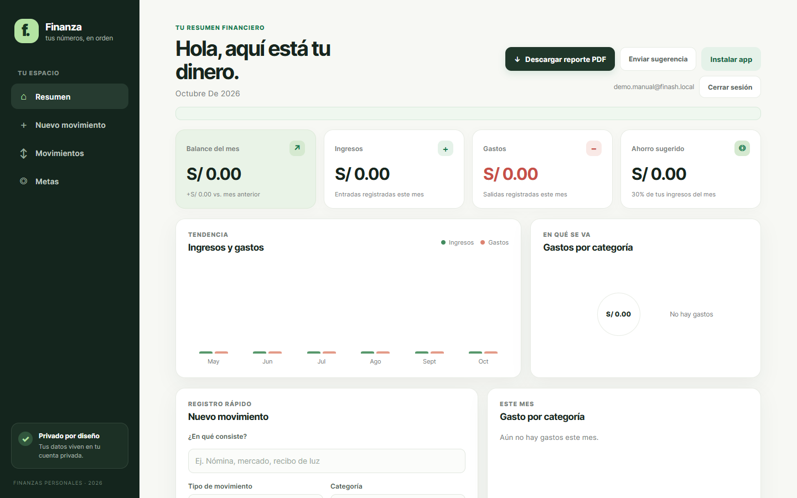
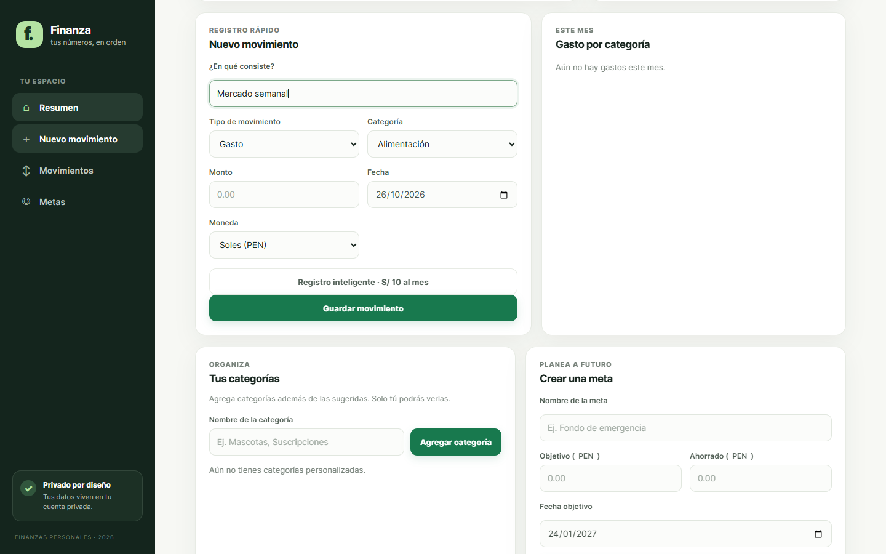
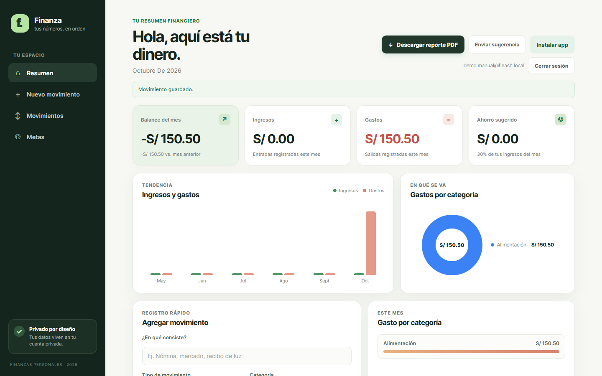
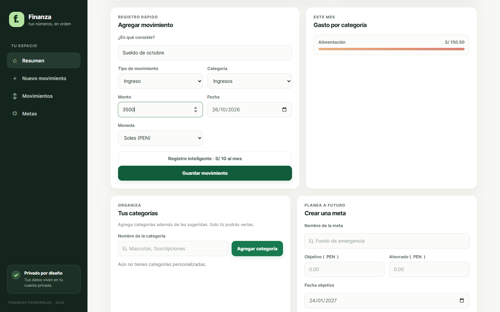
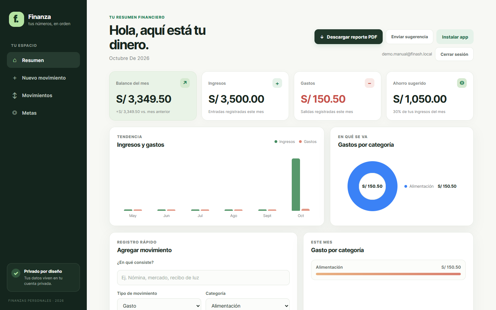
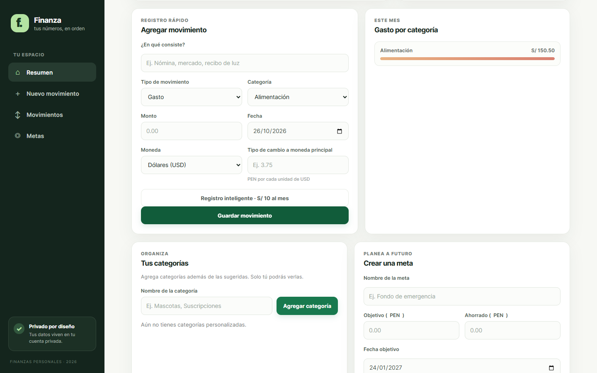
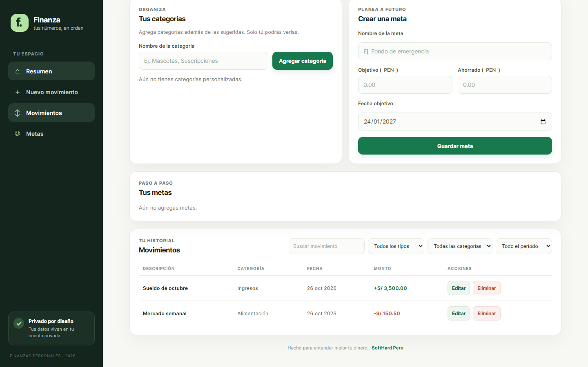

Video tutorial
Mira el proceso completo en 1 minuto y 17 segundos.
¿No se reproduce? Descargar el video (MP4).
Registrar un gasto Gasto
Ejemplo: una compra de mercado de S/ 150.50.
-
1
Abre “Nuevo movimiento”
Inicia sesión y, en el menú lateral, pulsa ＋ Nuevo movimiento. En el celular usa el botón ＋ Agregar de la barra inferior. La página baja directamente al formulario Registro rápido.

Menú lateral con la opción “Nuevo movimiento”. -
2
Describe el movimiento
En ¿En qué consiste? escribe una descripción corta (máximo 80 caracteres), por ejemplo “Mercado semanal” o “Recibo de luz”.
-
3
Elige el tipo y la categoría
En Tipo de movimiento selecciona Gasto. En Categoría elige la que corresponda: Alimentación, Vivienda, Transporte, Salud, Entretenimiento, Educación, Ahorro, Otros o una categoría propia.

Puedes crear tus propias categorías en la sección Tus categorías, debajo del formulario.
-
4
Ingresa el monto y la fecha
Escribe el Monto sin signos (ej.
150.50); debe ser mayor a 0. La Fecha viene con el día de hoy; cámbiala si el movimiento fue otro día. -
5
Confirma la moneda
Por defecto es Soles (PEN). Si pagaste en otra moneda, revisa la sección Registrar en otra moneda.

-
6
Guarda y revisa tu resumen
Pulsa Guardar movimiento. Aparecerá el aviso “Movimiento guardado.” y se actualizarán al instante el Balance del mes, los Gastos, el gráfico de tendencia y el de Gastos por categoría. El formulario queda limpio para el siguiente registro.

Registrar un ingreso Ingreso
Es el mismo formulario; solo cambia el tipo. Ejemplo: sueldo de S/ 3,500.
-
1
Completa el formulario como ingreso
Campo Valor de ejemplo Nota ¿En qué consiste? Sueldo de octubre Descripción corta Tipo de movimiento Ingreso Lo que cambia respecto al gasto Categoría Ingresos O la que prefieras Monto 3500 Mayor a 0 Fecha / Moneda Hoy · Soles (PEN) Valores por defecto 
-
2
Guarda y mira el balance
Pulsa Guardar movimiento. Suben los Ingresos, el Balance del mes (ingresos menos gastos) y el Ahorro sugerido (30% de tus ingresos del mes).

Registrar en otra moneda
Para movimientos en dólares (USD) o euros (EUR).
-
!
Indica el tipo de cambio
Al elegir Dólares (USD) o Euros (EUR) aparece el campo Tipo de cambio a moneda principal. Escribe cuántos soles vale una unidad de esa moneda (ej.
3.75). El sistema lo usa para convertir el monto a tu moneda principal en el resumen.
Si dejas vacío el tipo de cambio en una moneda extranjera, el movimiento no se guardará.
Ver, editar o eliminar
Todos tus registros quedan en Movimientos (menú lateral).
-
↕
Tu historial
Los ingresos aparecen en verde con signo + y los gastos en rojo con −. Puedes buscar y filtrar por tipo, categoría y período. Usa Editar para corregir un movimiento (el formulario cambia a Editar movimiento; pulsa Cancelar edición si te arrepientes) o Eliminar para borrarlo.

Preguntas frecuentes
- El botón “Guardar movimiento” no hace nada.
- Revisa que la descripción no esté vacía, que el monto sea mayor a 0, que haya una fecha y, en moneda extranjera, que el tipo de cambio esté completo.
- ¿Qué es “Registro inteligente”?
- Es una función Pro que registra movimientos a partir de una foto del recibo o de tu voz. El registro manual descrito en este manual siempre está disponible.
- ¿Quién ve mis movimientos?
- Solo tú: tus movimientos y categorías son privados y están protegidos en tu cuenta.
- ¿Puedo registrar desde el celular?
- Sí. En la versión móvil usa el botón ＋ Agregar de la barra inferior; el formulario es el mismo.